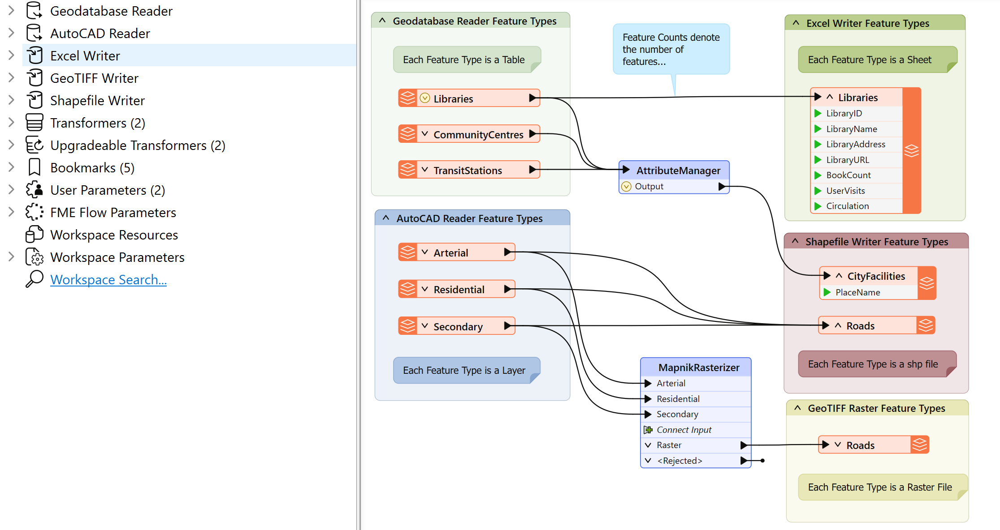

Learning Objectives
After completing this lesson, you’ll be able to:
- Define a workspace.
- Define a reader.
- Define a writer.
- Define a feature type.
- Define a record.
- Understand the hierarchical structure of workspaces.
Instructions
In this lesson, you will:
- Scroll down to read the text below.
- Complete the Quiz toward the bottom of the page.
- Optional: Let us know if you found this lesson relevant to your role by filling out the survey at the bottom of the page.
- Click 'Next' to mark the lesson complete.
Workspace Components
A workspace is the primary element in an FME translation and is responsible for storing a translation definition. It is the container for all the translation functionality and is stored in the following components.

Workspaces do not store the data they work with. Data is represented in the workspace as file paths, URLs, or Connections. The workspace provides FME with instructions on how to carry out the data integration workflow.
If you want to include your data in your workspace, e.g., for sharing, you can save it as a template.
Readers and Writers
A reader is the FME term for a component in a translation that reads a source dataset. Likewise, a writer is a component that writes to a destination dataset.
Entries in the Navigator window represent readers and writers.
Feature Types
Feature type is the FME term that describes a subset of records. Common alternatives for this term are layer, table, sheet, feature class, and object class. For example, each layer in a DWG file or each table in an Oracle database is defined by a feature type in FME.
Feature types are represented by objects that appear on the Workbench canvas.
Records (Features)
Records are the smallest single components of an FME translation.
You can see records in the record counts along connection lines, as single rows or pieces of geometry in Data Preview, and in the Record Information Window, where you can view everything FME knows about a single record.
Relationships
Each workspace can contain multiple readers and writers, each with multiple feature types and multiple features. They exist in a hierarchy that looks like this:

A workspace with multiple readers and writers might look like this:

This workspace has two readers (each with three feature types) and three writers (with one, two, and one feature types). Each reader and writer has a different format and name for its feature types.
Leave Us Feedback on This Lesson